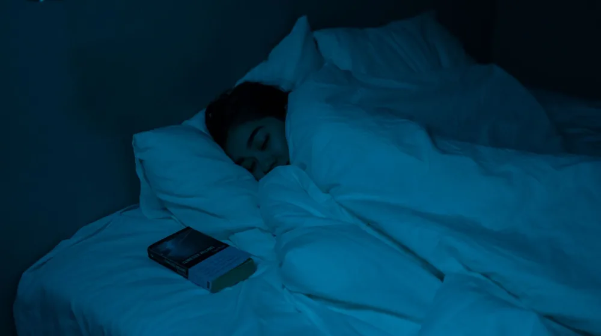

수면의 질 관리, 놓치면 후회할 5가지 핵심 체크리스트
사진: SHVETS production / Pexels (무료 이미지, 출처 표기)
수면의 질, 왜 지금 점검해야 할까요?

밤새 뒤척이다 겨우 잠들어도 아침에 개운하지 않은 경험, 누구나 한 번쯤 있을 것입니다. 많은 분들이 충분히 잤다고 생각하지만, 사실은 수면의 '양'보다 수면의 '질'이 더 중요합니다. 양질의 수면은 단순한 휴식을 넘어 신체 회복, 면역력 증진, 인지 기능 향상 등 전반적인 건강과 직결되기 때문입니다.
만약 만성적인 피로, 집중력 저하, 감정 기복이 심해졌다면 수면의 질이 떨어진 것은 아닌지 점검해볼 때입니다. 이 글에서는 당신의 수면을 방해하는 요소들을 알아보고, 건강한 잠을 되찾기 위해 지금 바로 실천할 수 있는 핵심 체크리스트를 제공합니다.
나의 숙면을 방해하는 요소, 무엇이 있을까?
수면의 질을 저하시키는 원인은 생각보다 다양합니다. 침실 환경부터 개인의 생활 습관, 그리고 심리적인 요인까지 복합적으로 작용할 수 있습니다. 아래 표를 통해 주요 숙면 방해 요인들을 확인하고, 나에게 해당되는 것이 있는지 점검해보세요.
침실 환경 개선을 위한 체크리스트
숙면을 위한 최적의 침실 환경을 조성하는 것은 수면의 질을 높이는 첫걸음입니다. 아래 체크리스트를 따라 당신의 침실을 '잠이 잘 오는 공간'으로 바꿔보세요. 2026년 10월 기준, 전문가들은 다음과 같은 환경 조성을 권장합니다.
- 적정 실내 온도 유지: 침실 온도는 약간 서늘하게 18~22°C를 유지하는 것이 좋습니다.
- 완벽한 암막 환경 조성: 외부의 작은 빛이라도 수면 호르몬인 멜라토닌 분비를 방해할 수 있으므로, 암막 커튼이나 수면 안대를 활용해 빛을 완벽하게 차단합니다.
- 조용한 환경 만들기: 시계 초침 소리나 외부 소음 등 작은 소리도 수면을 방해할 수 있습니다. 귀마개나 백색 소음기를 사용하여 소음을 최소화합니다.
- 편안한 침구 선택: 자신의 체형에 맞는 매트리스와 베개를 사용하고, 피부에 자극이 적은 침구 소재를 선택하여 편안함을 극대화합니다.
- 쾌적한 공기 질 관리: 주기적인 환기와 가습기, 공기청정기를 사용하여 침실의 습도(50~60%)와 공기 질을 쾌적하게 유지합니다.
수면 습관 점검 및 개선 체크리스트
침실 환경만큼이나 중요한 것이 바로 올바른 수면 습관입니다. 잠자리에 들기 전 루틴과 평소 생활 습관이 수면의 질에 큰 영향을 미칩니다. 다음 체크리스트를 통해 당신의 수면 습관을 점검하고 개선해보세요.
- 규칙적인 수면-기상 시간 유지: 주말에도 평일과 비슷한 시간에 잠들고 일어나는 것이 생체 리듬을 안정시키는 데 중요합니다.
- 카페인과 알코올 섭취 제한: 취침 6시간 전부터는 카페인 섭취를 피하고, 잠들기 전 과도한 알코올 섭취는 피로감을 유발할 수 있으므로 자제합니다.
- 자기 전 전자기기 사용 금지: 스마트폰, 태블릿, TV 등 전자기기에서 나오는 블루라이트는 멜라토닌 분비를 억제하므로, 잠들기 최소 1시간 전에는 사용을 중단합니다.
- 규칙적인 운동 습관: 낮 시간 동안 규칙적으로 운동하되, 잠들기 3시간 이내의 격렬한 운동은 오히려 수면을 방해할 수 있으니 피합니다.
- 잠들기 전 나만의 이완 루틴 만들기: 미지근한 물로 샤워하기, 따뜻한 차 마시기, 독서, 명상 등 몸과 마음을 이완시키는 활동을 통해 편안하게 잠들 준비를 합니다.
이럴 땐 전문가의 도움을 받는 것이 좋습니다
스스로 수면 환경과 습관을 개선하려는 노력에도 불구하고, 지속적으로 수면 문제가 해결되지 않는다면 전문가의 도움을 고려해야 합니다. 특히 다음과 같은 증상이 나타날 경우, 수면 클리닉이나 신경정신과 전문의와 상담하는 것이 좋습니다.
- 만성 불면증: 3개월 이상 주 3회 이상 잠들기 어렵거나 자주 깨는 증상이 지속될 때.
- 수면 무호흡증 의심 증상: 코골이가 심하고 자다가 숨을 멈추는 듯한 증상, 아침에 심한 두통과 주간 졸림증이 있다면 수면 다원 검사가 필요할 수 있습니다.
- 주간 과도한 졸림: 충분히 잠을 잤음에도 불구하고 낮 동안 지나치게 졸리고 집중하기 어렵다면 기면증 등 다른 수면 질환을 의심해볼 수 있습니다.
- 하지불안증후군: 잠들기 전 다리에 불편하고 간지러운 느낌이 들어 잠들기 어렵고, 움직이면 일시적으로 완화되는 증상이 있다면 전문가의 진단이 필요합니다.
- 수면 문제로 인한 심리적 고통: 불면증으로 인해 불안감, 우울감, 무기력감이 심해지고 일상생활에 지장을 준다면 심리 상담이나 약물 치료가 필요할 수 있습니다.
정확한 진단과 치료는 숙면을 되찾는 데 중요한 역할을 합니다. 절대 혼자서 고민하지 말고, 전문가의 도움을 받아 건강한 수면을 되찾으시길 바랍니다.
궁금증 해소: 수면 관리 Q&A
수면 관리에 대해 흔히 궁금해하는 질문들을 모아봤습니다. 대한수면연구학회 등 전문가 의견을 바탕으로 답변드립니다.
- Q: 낮잠은 수면의 질에 도움이 되나요?
A: 20분 내외의 짧은 낮잠은 오후의 집중력을 높이고 피로 해소에 도움이 될 수 있습니다. 하지만 늦은 오후에 길게 자는 낮잠은 밤잠을 방해할 수 있으므로 주의해야 합니다. - Q: 수면제 복용은 괜찮을까요?
A: 수면제는 단기적인 수면 개선에는 효과적일 수 있으나, 장기적으로는 의존성이나 부작용이 발생할 수 있습니다. 반드시 전문의와 상담 후 처방에 따라 최소한의 기간만 복용하는 것이 중요합니다. - Q: 멜라토닌 보충제는 효과가 있나요?
A: 멜라토닌은 수면-각성 주기를 조절하는 호르몬으로, 해외여행 등으로 인한 시차 적응이나 특정 수면 장애에 제한적으로 사용될 수 있습니다. 하지만 모든 사람에게 효과가 있는 것은 아니며, 복용 전 의사 또는 약사와 상담하는 것이 좋습니다. - Q: 잠자리에 들기 전 가벼운 스트레칭은 어떤가요?
A: 잠들기 전 10~15분 정도의 가벼운 스트레칭은 근육의 긴장을 이완시키고 혈액순환을 촉진하여 숙면에 도움을 줄 수 있습니다. 단, 격렬하지 않은 동작으로 몸을 편안하게 풀어주는 것이 핵심입니다.
수면의 질 관리는 꾸준한 관심과 노력이 필요한 과정입니다. 오늘 알려드린 체크리스트와 정보를 바탕으로, 더 건강하고 활기찬 삶을 위한 당신만의 숙면 솔루션을 찾아보세요. 정확한 사항은 공식 홈페이지나 해당 기관에서 다시 확인하시길 권장합니다.
🔗 이 글도 함께 보면 좋아요: 필라테스 vs 요가, 나에게 딱 맞는 운동은? 5가지 핵심 차이 비교
관련 추천 상품
수면 영양제, 수면 안대, 아로마 디퓨저 관련 인기 상품 보러가기
이 포스팅은 쿠팡 파트너스 활동의 일환으로, 이에 따른 일정액의 수수료를 제공받습니다.